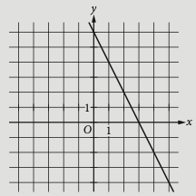

How many solutions (x,y) are there to the system of equations above?
A. Zero
B. One
C. Two
D. More than two
Hint: There are multiple ways to solve a system: calculate/guess, make a data table, eliminate a variable, substitute a variable, graph the system.
Lesson: The Relationships Among Linear Equations, Lines in the Coordinate Plane, and the Contexts They Describe
Homework: Practice systems of equations SAT practice problems in Khan Academy
Systems of equations
The point of intersection gives the solution to the system.
If the equations in a system of two linear equations in two variables are
graphed, each graph will be a line. There are three possibilities:
The lines intersect in one point. In this case, the system has a unique solution.
The lines are parallel. In this case, the system has no solution.
The lines are identical. In this case, every point on the line is a solution,
and so the system has infinitely many solutions.
What we know about graphs of linear equations
To graph, rearrange equations into y=mx+b form and use a graphing calculator.
Two lines are parallel if they have the same slope.
Two lines are perpendicular if the product of their slopes is –1.
For contextual situations, the slope is the rate of change, and the y-intercept is often the starting point.
Practice problems
3s−2t=a –15s+bt=−7
In the system of equations above, a and b are constants.
If the system has infinitely many solutions, what is the value of a?

The graph of line k is shown in the xy-plane above. Which of
the following is an equation of a line that is perpendicular to line k?
A) y=−2x+1
B) y=−21x+2
C) y=21x+3
D) y=2x+4
A voter registration drive was held in Town Y. The number of voters, V,
registered T days after the drive began can be estimated by the equation V=3,450+65T
What is the best interpretation of the number 65 in this equation?
A. The number of registered voters at the beginning of the registration drive
B. The number of registered voters at the end of the registration drive
C. The total number of voters registered during the drive
D. The number of voters registered each day during the drive
9x–14y=–3 2x–ay=–6
What value of a will result in a system with no solutions?
Lesson 1.9 Quiz SAT practice No Calculator
Thursday 22 September 2022
Do Now: Fractional exponent review
Find each value
25
(4)3
38
Lesson: Fractional exponents
Homework: Complete Khan Academy practice problems